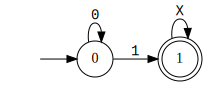
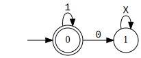
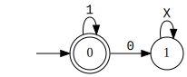
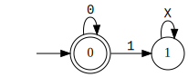
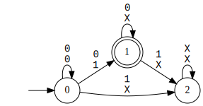
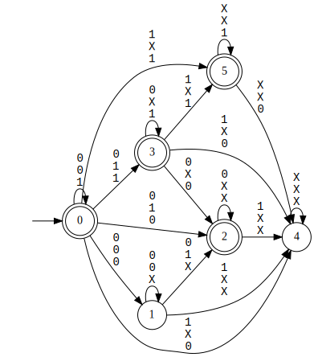

In this section, we see APIs to create and compose DFAs. The code for this example can be found in examples/03_dfa_creation_and_manipulation/dfa_creation_and_manipulation.cpp. To build this example, you can run make dfa_creation_and_manipulation_example.
#include <sstream>
#include <lydia/parser/ltlf/driver.hpp>
#include <lydia/mona_ext/mona_ext_base.hpp>
#include "automata/ExplicitStateDfa.h"
int main(int argc, char ** argv) {
std::string formula_p_str = "F(p)";
std::string formula_q_str = "F(q)";
std::string formula_r_str = "G(r)";
auto driver = std::make_shared<whitemech::lydia::parsers::ltlf::LTLfDriver>();
std::stringstream formula_p_stream(formula_p_str);
driver->parse(formula_p_stream);
whitemech::lydia::ltlf_ptr formula_p = driver->get_result();
std::stringstream formula_q_stream(formula_q_str);
driver->parse(formula_q_stream);
whitemech::lydia::ltlf_ptr formula_q = driver->get_result();
std::stringstream formula_r_stream(formula_r_str);
driver->parse(formula_r_stream);
whitemech::lydia::ltlf_ptr formula_r = driver->get_result();
whitemech::lydia::print_mona_dfa(
dfa_p.dfa_,
"dfa_Fp",
);
whitemech::lydia::print_mona_dfa(
dfa_q.dfa_,
"dfa_Fq",
);
whitemech::lydia::print_mona_dfa(
dfa_r.dfa_,
"dfa_Fr",
);
whitemech::lydia::print_mona_dfa(
not_dfa_p.dfa_,
"dfa_not_Fp",
);
whitemech::lydia::print_mona_dfa(
and_dfa.dfa_,
"dfa_not_Fp_and_Fq",
);
whitemech::lydia::print_mona_dfa(
or_dfa.dfa_,
"dfa_not_Fp_and_Fq_or_Gr",
);
}
A DFA with explicit states and symbolic transitions.
Definition: ExplicitStateDfa.h:22
static ExplicitStateDfa dfa_product_or(const std::vector< ExplicitStateDfa > &dfa_vector)
Take the product OR of a sequence of explicit-state DFAs.
Definition: ExplicitStateDfa.cpp:355
static ExplicitStateDfa dfa_of_formula(const whitemech::lydia::LTLfFormula &formula)
Construct an explicit-state DFA from a given formula using Lydia.
Definition: ExplicitStateDfa.cpp:31
static ExplicitStateDfa dfa_complement(ExplicitStateDfa &d)
Complement a DFA.
Definition: ExplicitStateDfa.cpp:440
static ExplicitStateDfa dfa_product_and(const std::vector< ExplicitStateDfa > &dfa_vector)
Take the product AND of a sequence of explicit-state DFAs.
Definition: ExplicitStateDfa.cpp:278
int get_nb_variables()
Get the number of variables.
Definition: ExplicitStateDfa.h:70
First, we define the DFAs for the LTLf formulas F(p), F(q), and G(r):
std::string formula_p_str = "F(p)";
std::string formula_q_str = "F(q)";
std::string formula_r_str = "G(r)";
auto driver = std::make_shared<whitemech::lydia::parsers::ltlf::LTLfDriver>();
std::stringstream formula_p_stream(formula_p_str);
driver->parse(formula_p_stream);
whitemech::lydia::ltlf_ptr formula_p = driver->get_result();
std::stringstream formula_q_stream(formula_q_str);
driver->parse(formula_q_stream);
whitemech::lydia::ltlf_ptr formula_q = driver->get_result();
std::stringstream formula_r_stream(formula_r_str);
driver->parse(formula_r_stream);
whitemech::lydia::ltlf_ptr formula_r = driver->get_result();
whitemech::lydia::print_mona_dfa(
dfa_p.dfa_,
"dfa_Fp",
);
whitemech::lydia::print_mona_dfa(
dfa_q.dfa_,
"dfa_Fq",
);
whitemech::lydia::print_mona_dfa(
dfa_r.dfa_,
"dfa_Fr",
);
The three DFAs are visualized below in SVG format:
  

Next, we compute the complement of the DFA for F(p), with the function Syft::ExplicitStateDfa::dfa_complement:
whitemech::lydia::print_mona_dfa(
not_dfa_p.dfa_,
"dfa_not_Fp",
);

The intersection between two DFAs can be computed using the function Syft::ExplicitStateDfa::dfa_product_and. In the following, we compute the intersection between the DFAs of !F(p) and F(q):
whitemech::lydia::print_mona_dfa(
and_dfa.dfa_,
"dfa_not_Fp_and_Fq",
);

Finally, we compute the union between the unione between the DFAs of !F(p) & F(q) and G(r):
whitemech::lydia::print_mona_dfa(
or_dfa.dfa_,
"dfa_not_Fp_and_Fq_or_Gr",
);

Other operations can be found in the header file automata/ExplicitStateDfa.h.
For the symbolic DFA representation, the corresponding functions are SymbolicStateDfa::complement, SymbolicStateDfa::product_AND, and SymbolicStateDfa::product_OR. Such functions can be found in automata/SymbolicStateDfa.h.